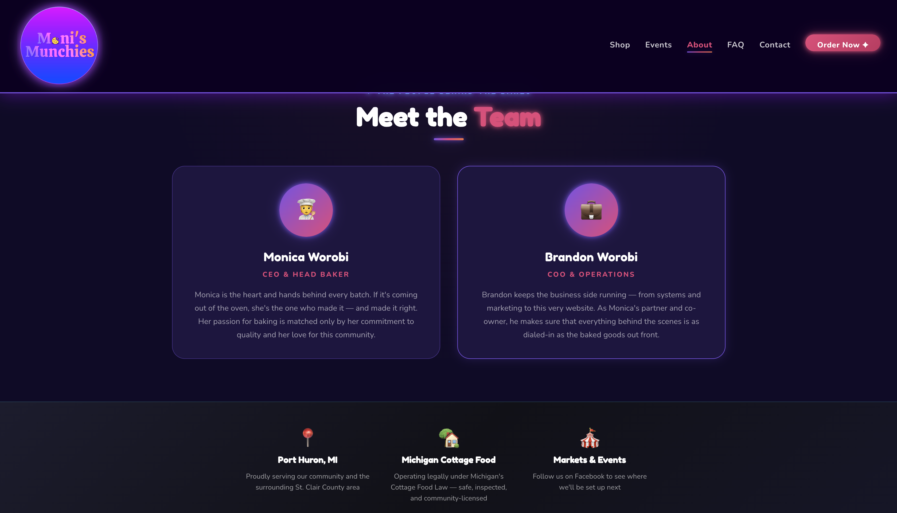
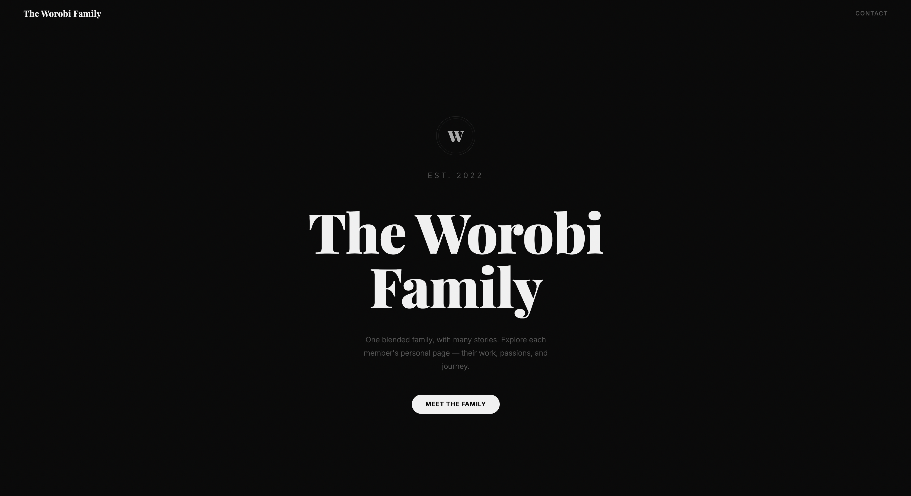

Content & brand infrastructure
High Functioning Chaos
Blog, podcast, content, and brand infrastructure supporting honest writing around family, neurodivergence, and lived experience.
View project →Operations / Compliance / Technology
Professional profile
03Sites & project work
Content & brand infrastructure
Blog, podcast, content, and brand infrastructure supporting honest writing around family, neurodivergence, and lived experience.
View project →
Small business & commerce
Customer-facing website for baked goods, online orders, events, and cottage-food information, with an operating role behind the business as well as the digital work.
View project →
Information architecture & self-hosting
Self-hosted family hub with a clear structure for individual pages, history, recipes, remembrance, and shared family content.
View project →
Purpose-led digital experience
Remembrance site with an organized content system for stories, support details, and family-centered updates.
View project →The wider network
Different audiences call for different systems. These properties cover service businesses, planning tools, personal platforms, and creative experiments.
HovelMatch is linked to its source because its public HTTPS endpoint could not be verified during this update.